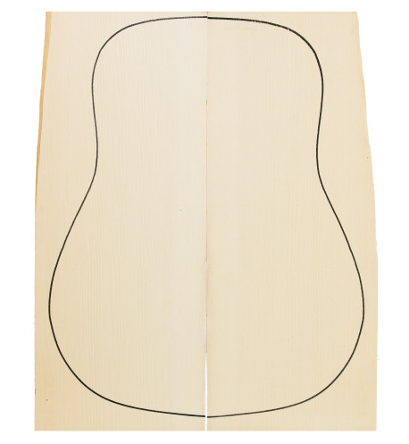
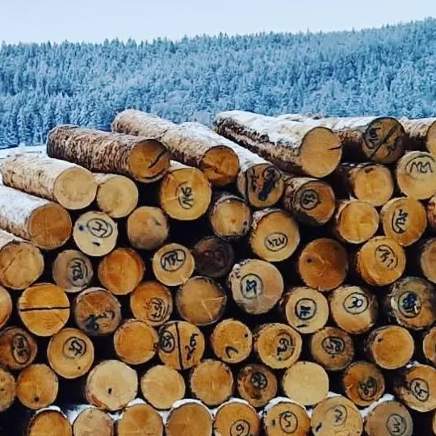
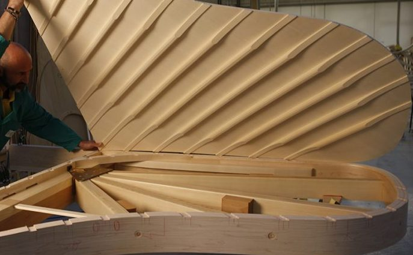

La elección de materiales en la construcción de una guitarra es esencial para determinar su sonido, durabilidad y estética. Entre las maderas más valoradas por los luthiers de élite se encuentra el Abeto Moon Spruce, también conocido como abeto de luna nueva. Su exclusividad y características excepcionales lo convierten en una opción codiciada para guitarras de alta gama. En este artículo, exploraremos en profundidad qué es, cuándo se corta, sus cualidades, origen, color, densidad, curiosidades y por qué es tan apreciado en el mundo de la luthería.
¿Qué es el Abeto Moon Spruce?
El Abeto Moon Spruce proviene de la especie Picea abies, comúnmente conocida como abeto europeo. Crece en las regiones alpinas de Suiza, Austria y Alemania. Su nombre se debe a una antigua tradición de tala basada en los ciclos lunares, según la cual la madera obtenida bajo ciertas condiciones astronómicas posee propiedades superiores en términos de estabilidad y resonancia.
¿Cuándo se Corta el Abeto Moon Spruce?
La excepcionalidad del Abeto Moon Spruce radica en su método de tala. Se corta exclusivamente durante la luna menguante del invierno, cuando la savia del árbol está en su nivel más bajo. Este período específico reduce el contenido de humedad de la madera, minimizando el riesgo de deformaciones y contracciones con el tiempo. Además, tras la tala, los troncos se colocan cuesta abajo, permitiendo que la savia restante se desplace hacia el extremo inferior por gravedad, lo que contribuye a obtener un producto final más seco y rígido.
¿Qué Cualidades Tiene el Abeto Moon Spruce?
El Abeto Moon Spruce presenta una combinación única de características ideales para la construcción de tapas armónicas en guitarras de alta gama:
- Resonancia excepcional: Su estructura celular densa y uniforme permite una vibración eficiente, resultando en un sonido equilibrado y con mayor proyección.
- Estabilidad estructural: Gracias a su bajo contenido de humedad en el momento de la tala, es menos propenso a cambios por variaciones ambientales y presenta menor riesgo de deformaciones.
- Ligereza con resistencia: Posee una excelente relación peso-resistencia, permitiendo construir tapas más finas sin comprometer la durabilidad.
- Claridad tonal: Genera un sonido limpio, con agudos cristalinos y una respuesta dinámica superior.
- Belleza natural: Presenta vetas rectas, finas y uniformes, con un color claro y elegante que realza la estética de la guitarra.

Puedes aprender más en el pódcast La cabaña del luthier o en nuestro canal de YouTube.
Origen, Color y Densidad del Abeto
Origen: Se encuentra en los bosques alpinos de Suiza, Austria y Alemania, donde los árboles crecen en condiciones de altitud y clima que favorecen un crecimiento lento y uniforme.
Color: Su tonalidad varía entre el blanco cremoso y el amarillo pálido, con una textura fina y vetas sutiles.
Densidad: Su densidad oscila entre 350 y 450 kg/m³, lo que le confiere la ligereza ideal para tapas armónicas sin comprometer la rigidez estructural.
Curiosidades sobre el Abeto luna nueva (Pícea Abies)
Un método de tala basado en conocimientos ancestrales
El nombre «Moon Spruce» proviene de la antigua creencia de que la madera cortada durante la fase de luna menguante en invierno es más estable y resistente. Esta práctica se ha seguido en los bosques alpinos durante generaciones y se basa en la observación de que la savia del árbol está en su nivel más bajo en esta fase lunar.
Incluso estudios científicos recientes han demostrado que la madera cortada en este período tiene menos humedad residual y es menos propensa a la deformación, lo que la hace ideal para instrumentos musicales. Esto ha llevado a que algunos luthiers y fabricantes de instrumentos solo confíen en proveedores que sigan este antiguo método de tala.

La misma madera utilizada en los Stradivarius
El legendario luthier Antonio Stradivari usó madera de Picea abies procedente de los Alpes para fabricar sus violines, considerados los mejores del mundo. La combinación de esta madera con su técnica de construcción ha dado lugar a un sonido inigualable que aún hoy sigue sin ser completamente replicado.
Se cree que el Abeto Moon Spruce podría haber sido la madera exacta utilizada en estos violines, ya que en la época de Stradivari se seguían estos mismos métodos de tala basados en los ciclos lunares.
Crecimiento en condiciones extremas
El Abeto Moon Spruce crece en altitudes elevadas, entre 1.000 y 2.000 metros sobre el nivel del mar, en regiones montañosas de Suiza, Austria y Alemania. Estas duras condiciones hacen que el árbol crezca de manera lenta y uniforme, lo que resulta en anillos de crecimiento más estrechos y una fibra más densa, dos características ideales para la fabricación de tapas armónicas en guitarras y otros instrumentos.
Un dato interesante es que los luthiers buscan árboles con un crecimiento perfectamente vertical y sin nudos, ya que esto garantiza una mejor transmisión del sonido. Solo un pequeño porcentaje de los árboles cumple con estos requisitos, lo que aumenta la exclusividad del Abeto.
La madera de los pianos más famosos
El Picea abies no solo es fundamental en la fabricación de guitarras, sino que también es la madera utilizada en los pianos Steinway & Sons, una de las marcas más prestigiosas del mundo. Las tapas armónicas de estos pianos están hechas de abeto europeo, gracias a su capacidad de transmitir el sonido de manera clara y con gran riqueza tonal.

Su importancia en la cultura escandinava
En los países nórdicos, el Picea abies ha sido utilizado tradicionalmente para la fabricación de barcos vikingos, casas y muebles debido a su abundancia y resistencia. Incluso hoy en día, en Escandinavia, los abetos rojos siguen desempeñando un papel fundamental en la construcción y la artesanía.
Además, este árbol tiene un gran valor simbólico y espiritual en algunas culturas, considerándose un símbolo de vida y resistencia en los duros inviernos del norte de Europa.

Luthier artesanal en Los Alcázares (Murcia). Construye guitarras personalizadas e instrumentos de folclore en Vael de Ginés.